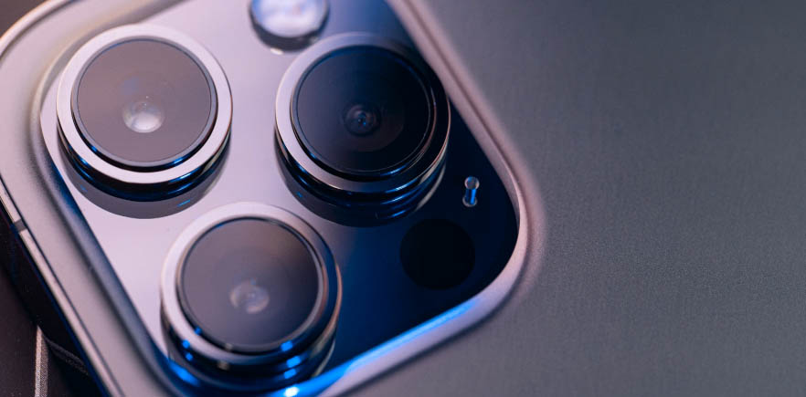

Dragon Ball Z
Posted on April 1989 to January 1996
Dragon Ball Z[c] is a Japanese anime television series produced by Toei Animation. Part of the Dragon Ball media franchise, it is the sequel to the 1986 Dragon Ball television series and adapts the latter 325 chapters of the original Dragon Ball manga series created by Akira Toriyama.[6] Dragon Ball Z continues the adventures of Son Goku in his adult life as he and his companions defend the Earth against villains including aliens (Vegeta, Frieza), androids (Cell), and magical creatures (Majin Buu). At the same time, the story follows the life of Goku's son, Gohan, as well as the development of his rivals, Piccolo and Vegeta. Due to the success of the series in the United States, the manga chapters making up its story were initially released by Viz Media under the Dragon Ball Z title. The anime's popularity has also spawned various media and merchandise that has come to represent the majority of the material within the Dragon Ball franchise, including films, home video releases, soundtracks, trading cards, and video games. Dragon Ball Z remains a cultural icon through numerous adaptations and re-releases, including a remastered broadcast titled Dragon Ball Z Kai.[d]
Dragon Ball Z has captured the hearts of fans for decades with its epic battles, complex characters, and timeless themes of friendship and perseverance.
Read more...

Main Characters of Dragon Ball Z
Posted on Japan on April 26, 1989 (on Fuji TV) at 7:30 p.m. and ended on January 31, 1996.
Dragon Ball Z follows the adventures of the adult Goku who, along with his companions, defends the earth against an assortment of villains ranging from intergalactic space fighters and conquerors, unnaturally powerful androids and near indestructible magical creatures. While the original Dragon Ball anime followed Goku through childhood into adulthood, Dragon Ball Z is a continuation of his adulthood life, but at the same time parallels the maturation of his son, Gohan, as well as other characters from Dragon Ball and more. The separation between the series is also significant as the latter series takes on a more dramatic and serious tone. The anime also features characters, situations and back-stories not present in the original manga.
Dragon Ball Z has introduced us to some of the most iconic characters in anime history. From the Saiyan warriors like Goku and Vegeta to the evil tyrants like Frieza and Cell, each character has left a lasting impression on fans.
Read more...
Exploring the Latest Smartphone Trends
Date: May 10, 2024
Smartphones have become an integral part of our daily lives, serving as our personal assistants, entertainment hubs, and communication devices. In this blog post, let's delve into the latest trends shaping the smartphone industry...
Read more...

The Evolution of Smartphone Cameras
Published on
This narrative highlights the pivotal technological advancements that have revolutionized smartphone cameras, including: Resolution Upgrades: Initially, smartphones offered low-resolution cameras, often below 1 megapixel. Over time, advancements in sensor technology and image processing have led to significant increases in resolution, with modern devices boasting cameras capable of capturing images with resolutions exceeding 100 megapixels. Optical Innovations: Traditional fixed-focus lenses have been replaced by autofocus mechanisms, improving the overall sharpness and clarity of images. Additionally, the integration of optical image stabilization (OIS) and electronic image stabilization (EIS) has mitigated the effects of hand tremors, enabling smoother video recording and sharper photos, even in challenging conditions. Sensor Size: The size of camera sensors has grown substantially, allowing for better light capture and improved low-light performance. Larger sensors facilitate the implementation of features such as pixel binning and computational photography, resulting in enhanced image quality and dynamic range. Multi-Lens Systems: Smartphone manufacturers have embraced multi-lens camera setups, incorporating wide-angle, telephoto, and ultra-wide lenses to offer users greater versatility and creative control. These setups enable various shooting modes, including portrait, macro, and night photography, catering to diverse photographic preferences. Software Enhancements: The integration of advanced AI algorithms and machine learning techniques has empowered smartphones to optimize image processing in real-time. Features like scene recognition, automatic exposure adjustment, and intelligent HDR enable users to capture professional-grade photos with minimal effort. Emergence of Computational Photography: Computational photography techniques, such as HDR (High Dynamic Range), Night Mode, and computational bokeh, leverage software processing to enhance image quality beyond the limitations of hardware components. These innovations have democratized photography, allowing users to achieve stunning results without specialized equipment or technical expertise. Integration with Augmented Reality (AR): Smartphone cameras have embraced AR technology, enabling users to overlay digital elements onto their real-world surroundings. From interactive filters and AR games to virtual try-on experiences, AR integration has expanded the creative possibilities of smartphone photography. From basic point-and-shoot cameras to sophisticated multi-lens setups, smartphone cameras have undergone a remarkable evolution. Let's take a closer look at how these cameras have transformed over the years.
Read more...